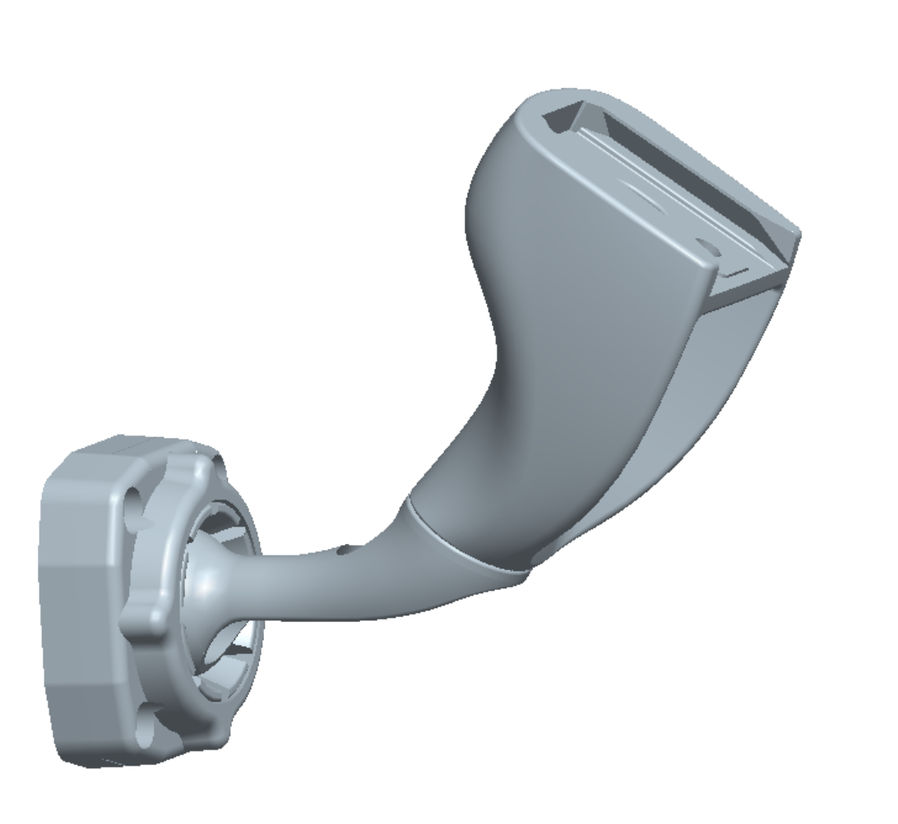

新增车型新增支架
车型信息品牌/车型不存在时自动创建
品牌奥迪已存在
车型一汽奥迪Q5L 2025将新建
年款留空 = 全部年款（推荐）全部
年款写法：
2021款 2022款 或 2021-2024 或 2021款到2024款。
填了就写给本次全部勾选项；不确定就留空。越界年份（<1980 / >2035）就地标红。保存（3 条）清空
已选 3 个支架
选择适配支架
可多选，支持拼音
搜索支架号 / 年份…
全选筛选结果清空已选
✓141 号

10 号

✓22 号

3A 号

✓301A 号

55 号

已选支架 3
141 号移除
22 号移除
301A 号移除
最近录入手工数据（source = M），按时间倒序
| 类型 | 品牌 | 车型 / 支架 | 年款 | 对象 | 时间 |
|---|---|---|---|---|---|
| 车型 | 奥迪 | 一汽奥迪Q5L 2025 | 全部年款 | 3 个支架 | 2026-10-26 10:12 |
| 支架 | — | 301A | — | 2 个车型 | 2026-10-26 10:05 |
支架 301 · 品牌 269 · 车型 1,480手工适配 5 条
数据 2026-10-26 10:12